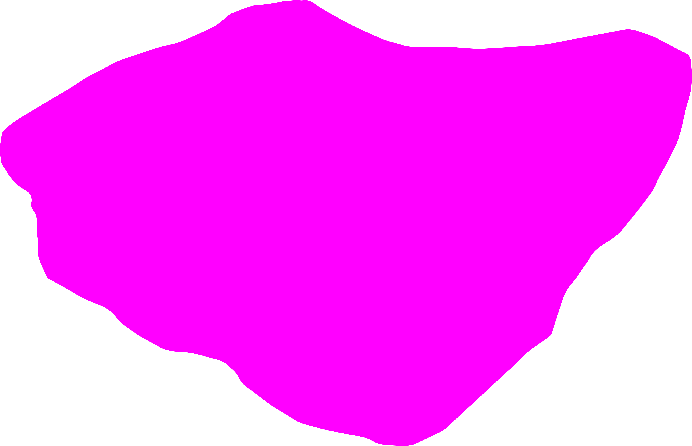
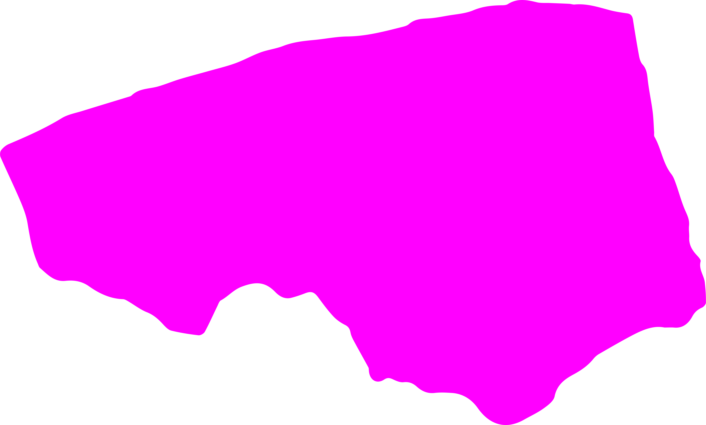
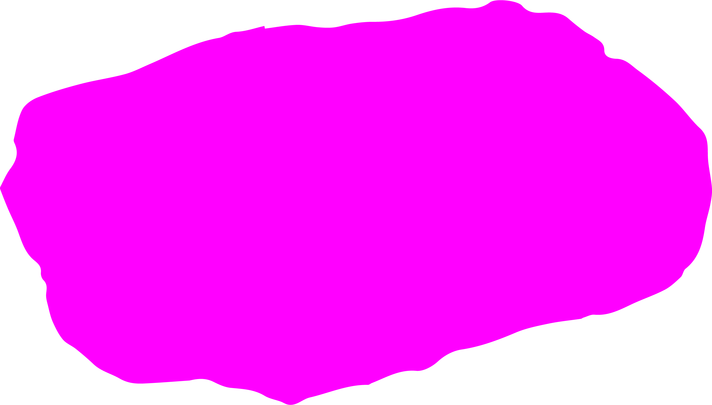

The way of opening eyes Squinting, drowsily opening, opening straight, opening thinly, opening widely, opening with effort, opening with less effort, opening with wrinkles. opening only oneside. How Mom opens her eyes How Dad opens his eyes How my older sister opens her eyes How I open my eyes
When the muscles around my eyes dart around like cornered mice, I feel powerless.
After coming to Germany, I developed an allergy to pollen that I didn't have before. Every morning in autumn, I wake up with sticky eyes. It feels like someone has spread honey on my eyelashes. I was prescribed a week's worth of medication and artificial tears.